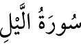

<a name=10708></a><br/>
<b>92- el-LEYL SÛRESİ</b><br/>
<i><b>Geceye yeminle başladığı için “Leyl” sûresi denilmiştir. 21 âyettir. Mekke’de</b></i><br/>
<i><b>inmiştir. Sûrede hem Mekkî hem de Medenî âyetler olduğu da söylenmiştir.</b></i><br/>
